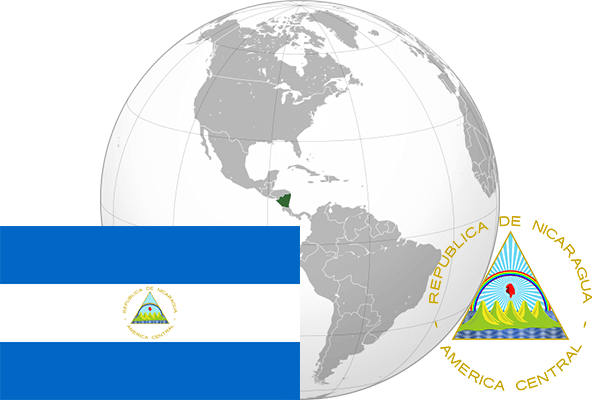

To`liq nomi: Nikaragua Respublikasi
Region: Markaziy Amerika
Qonunchilik shakli: Prezidentlik respublika
Mustaqillik kuni: 15 sentabr 1821-yil (Ispaniyadan)
Poytaxt: Managua
Maydoni: 130,375 km2
Chegaradosh davlatlari: Gonduras, Kosta-Rika
Aholisi: 6,167,237 (2012-yil)
Aholi zichligi: 51/km2
Aholining o`rtacha yoshi: 75,11 yil (2015-yil)
Rasmiy tili: Ispan tili
Dini: Xristian
Pul birligi: Kordoba
Telefon prefiksi: +505
Internet domen: .ni
Xalqaro tashkilotlarga a`zoligi: BMT
Dengiz va okeanlarga chiqishi: Karib dengizi , Tinch okeani
YIM: Butun: $13.748mlrd(2017-yil) Jon boshiga: $2,207
Yirik shaharlari: Managua, Leon, Masaya.